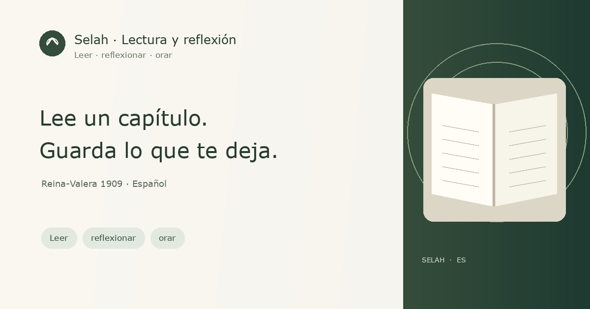

Un espacio tranquilo para leer
Lee la Biblia con calma, un capítulo a la vez.
Lee la Reina-Valera 1909 completa. Elige un libro, detente en un pasaje y anota lo que quieras recordar.
Reina-Valera 1909 · español histórico
Esta edición histórica tiene 18 posiciones de versículo sin texto. Se muestran claramente; no se han completado con otra traducción.
No necesitas cuenta para leer. Tus notas, marcadores y resaltados se guardan solo en este navegador; no se comparten ni sincronizan.

Reina-Valera 1909 · 66 libros
Elige un libro y capítulo
Escribe tu reflexión
¿Qué palabra o idea se quedó contigo?
Guardado en este dispositivo.